Contents
Plotting the Nine States
for i=1:1:n_states
figure(i)
plot(sim_time,act_states(i,:),'b',sim_time,est_states(i,:),'g')
hold on
plot(sim_time,est_states(i,:)+3*sqrt(R(i,i)),'r',sim_time,est_states(i,:)-3*sqrt(R(i,i)),'r')
xlabel('Time (Seconds)')
legend('Actual','Estimate','\pm 3\sigma (Sensor \sigma)')
switch i
case 1
title('EKF, State 1, x-Direction Position, Yaw Frame, p_x')
ylabel('p_x (m)')
case 2
title('EKF, State 2, y-Direction Position, Yaw Frame, p_y')
ylabel('p_y (m)')
case 3
title('EKF, State 3, z-Direction Position, Yaw Frame, p_z')
ylabel('p_z (m)')
case 4
title('EKF, State 4, x-Direction Velocity, Yaw Frame, dp_x/dt')
ylabel('dp_x/dt (m/s)')
case 5
title('EKF, State 5, y-Direction Velocity, Yaw Frame, dp_y/dt')
ylabel('dp_y/dt (m/s)')
case 6
title('EKF, State 6, z-Direction Velocity, Yaw Frame, dp_z/dt')
ylabel('dp_z/dt (m/s)')
case 7
title('EKF, State 7, Roll Euler Angle, \phi')
ylabel('\phi (rad)')
case 8
title('EKF, State 8, Pitch Euler Angle, \theta')
ylabel('\theta (rad)')
case 9
title('EKF, State 9, Yaw Euler Angle, \psi')
ylabel('\psi (rad)')
end
end
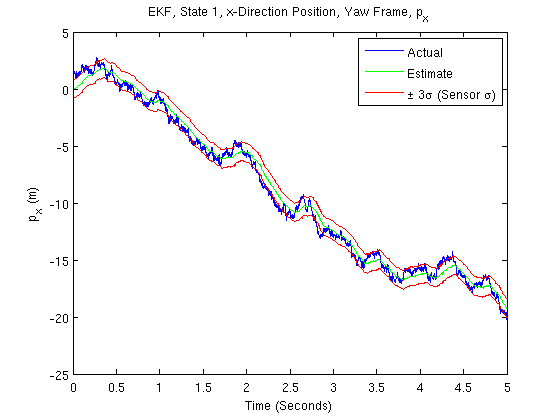 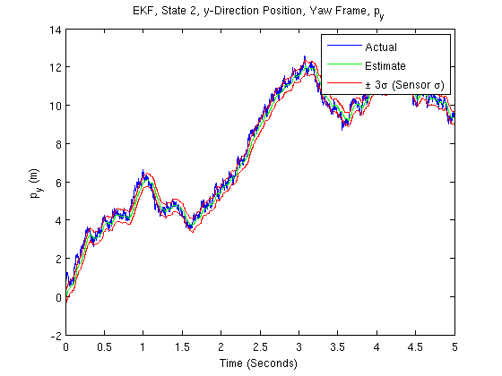 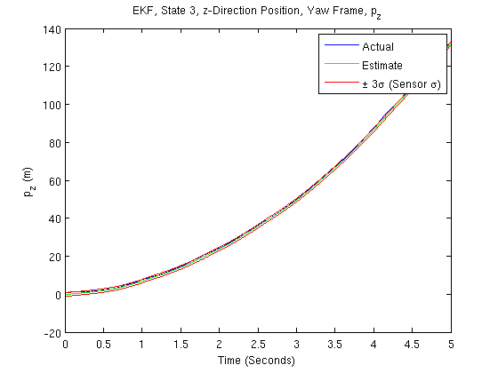 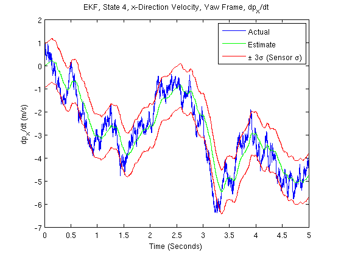 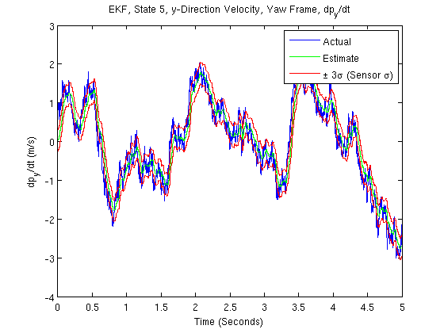 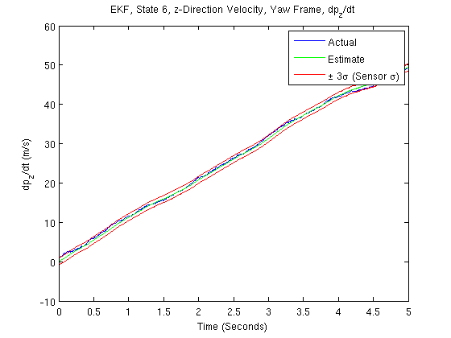 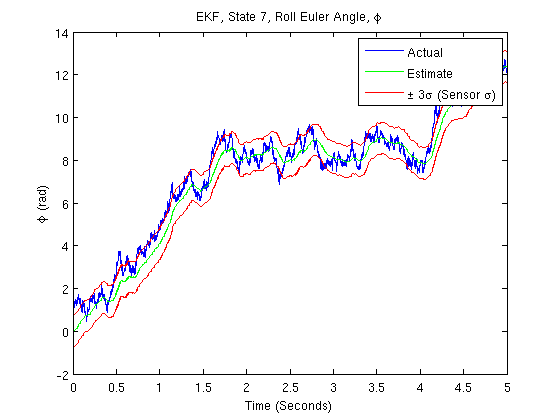 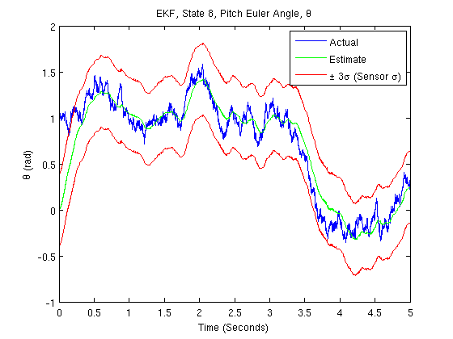 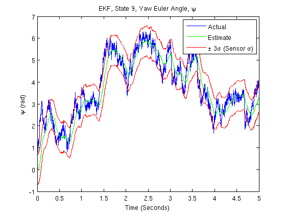
Plotting the Inertial Positions
for i=1:1:3
figure(i+9)
plot(sim_time,act_inertial_pos(i,:),'b',sim_time,est_inertial_pos(i,:),'g')
hold on
plot(sim_time,est_inertial_pos(i,:)+3*sqrt(R(i,i)),'r',sim_time,est_inertial_pos(i,:)-3*sqrt(R(i,i)),'r')
xlabel('Time (Seconds)')
legend('Actual','Estimate','\pm 3\sigma (Sensor \sigma)')
switch i
case 1
title('EKF, x-Direction Position, Inertial Frame, x')
ylabel('x (m)')
case 2
title('EKF, y-Direction Position, Inertial Frame, y')
ylabel('y (m)')
case 3
title('EKF, z-Direction Position, Inertial Frame, z')
ylabel('z (m)')
end
end
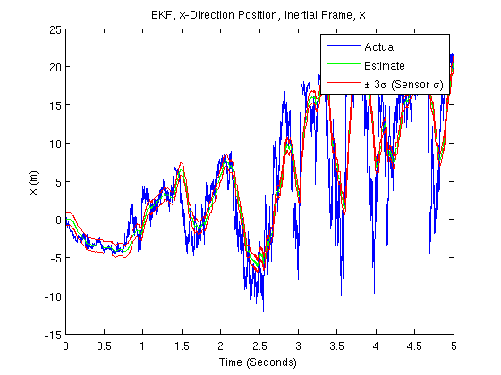 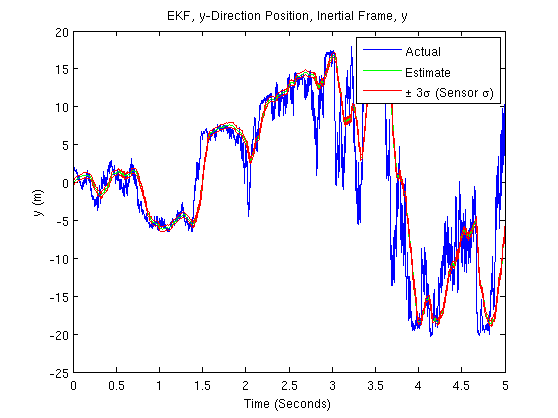
Plotting the Inertial Velocities
for i=1:1:3
figure(i+12)
plot(sim_time,act_inertial_vel(i,:),'b',sim_time,est_inertial_vel(i,:),'g')
hold on
plot(sim_time,est_inertial_vel(i,:)+3*sqrt(R(i+3,i+3)),'r',sim_time,est_inertial_vel(i,:)-3*sqrt(R(i+3,i+3)),'r')
xlabel('Time (Seconds)')
legend('Actual','Estimate','\pm 3\sigma (Sensor \sigma)')
switch i
case 1
title('EKF, x-Direction Velocity, Inertial Frame, dx/dt')
ylabel('dx/dt (m/s)')
case 2
title('EKF, y-Direction Velocity, Inertial Frame, dy/dt')
ylabel('dy/dt (m/s)')
case 3
title('EKF, z-Direction Velocity, Inertial Frame, dz/dt')
ylabel('dz/dt (m/s)')
end
end
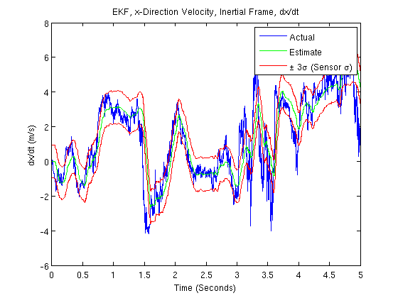 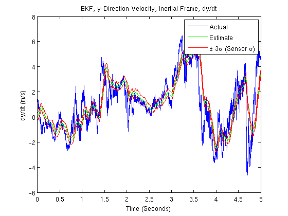 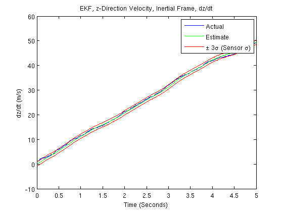